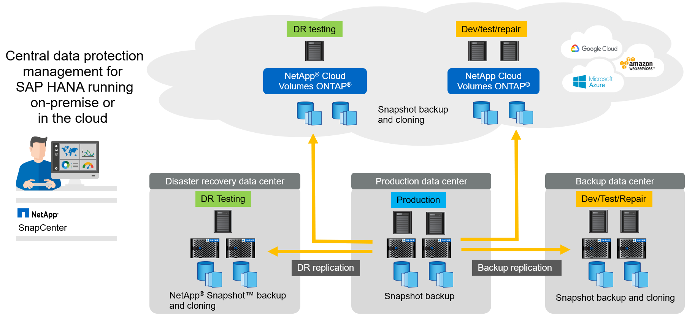
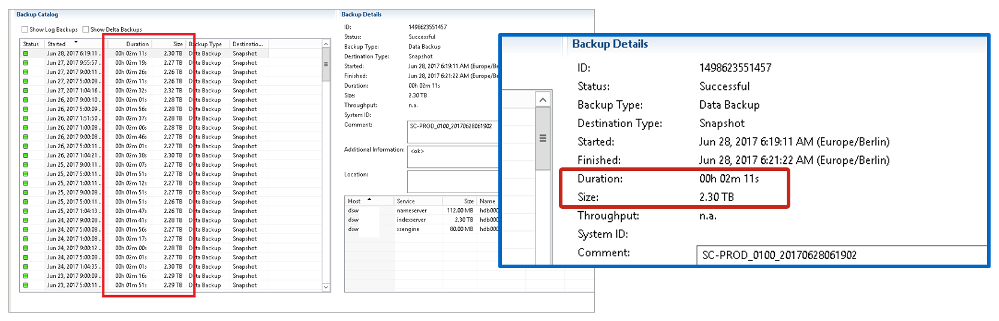
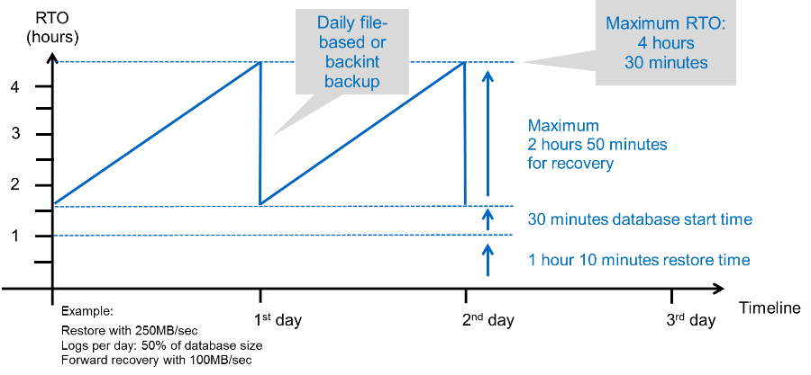
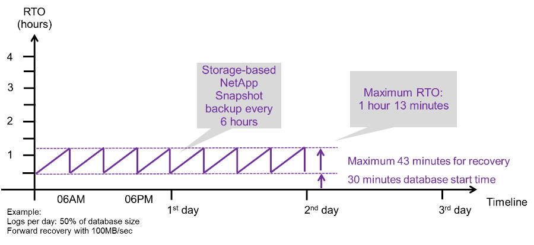
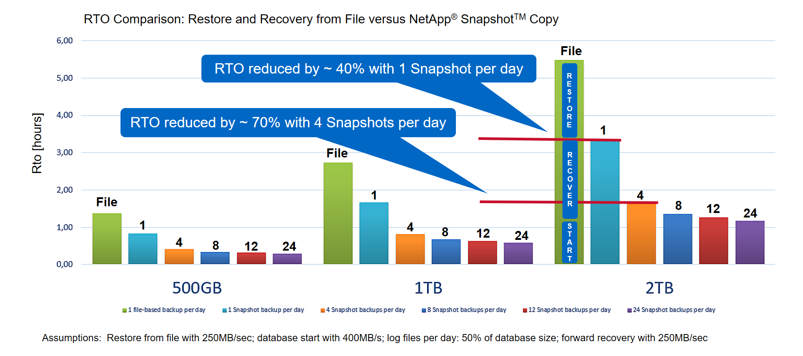

Dokumentationsänderungen beantragen
Dokumentationsänderungen beantragen In GitHub bearbeiten
In GitHub bearbeiten Leitfaden für Beitragende
Leitfaden für BeitragendeTR-4614: SAP HANA Backup und Recovery mit SnapCenter
Beitragende
Nils Bauer, NetApp
Unternehmen benötigen heutzutage eine kontinuierliche, unterbrechungsfreie Verfügbarkeit ihrer SAP-Applikationen. Sie erwarten konsistente Performance angesichts stetig wachsender Datenvolumen und bei routinemäßigen Wartungsaufgaben wie System-Backups. Das Durchführen von Backups von SAP-Datenbanken ist eine wichtige Aufgabe, die erhebliche Performance-Auswirkungen auf das SAP-Produktionssystem haben kann.
Die Backup-Fenster schrumpfen, während die zu sichernden Daten immer größer werden. Somit ist es schwierig, mit minimalen Auswirkungen auf Geschäftsprozesse einen Zeitpunkt zu finden, in dem Backups durchgeführt werden können. Die Zeit, die zum Wiederherstellen und Wiederherstellen von SAP-Systemen benötigt wird, ist besorgt, da Ausfallzeiten bei SAP-Produktions- und nicht produktiven Systemen minimiert werden müssen, um Datenverlusten und Kosten für das Unternehmen zu reduzieren.
Folgende Punkte fassen die Herausforderungen zusammen, die mit SAP-Backup und -Recovery zu tun haben:
-
Performance-Auswirkungen auf SAP-Produktionssysteme. herkömmliche Copy-basierte Backups führen in der Regel aufgrund der hohen Belastungen auf den Datenbankserver, das Storage-System und das Speichernetzwerk zu einer erheblichen Performance-Belastung für SAP-Produktionssysteme.
-
Schrumpfende Backup-Fenster. herkömmliche Backups können nur vorgenommen werden, wenn nur wenige Dialoge oder Batch-Aktivitäten im SAP-System ausgeführt werden. Wenn SAP Systeme rund um die Uhr im Einsatz sind, gestaltet sich die Planung von Backups schwieriger.
-
Schnelles Datenwachstum. für ein schnelles Datenwachstum und immer kleiner werdende Backup-Fenster sind laufende Investitionen in die Backup-Infrastruktur erforderlich. Das bedeutet, dass Sie mehr Tape-Laufwerke, zusätzlichen Backup-Speicherplatz und schnellere Backup-Netzwerke beschaffen müssen. Außerdem müssen Sie die laufenden Kosten für die Speicherung und das Management der Tape-Ressourcen tragen. Inkrementelle oder differenzielle Backups können diese Probleme beheben. Allerdings führt diese Anordnung zu einem sehr langsamen, umständlichen und komplexen Restore-Prozess, der sich schwieriger überprüfen lässt. Derartige Systeme verkürzen in der Regel die Zeiten der Recovery-Zeit (Recovery Time Objective, RTO) und des Recovery-Zeitpunkts (RPO) und sind für das Unternehmen nicht akzeptabel.
-
Steigende Kosten von Ausfallzeiten. ungeplante Ausfallzeiten eines SAP-Systems haben typischerweise Auswirkungen auf die Geschäftsfinanzen. Die Notwendigkeit der Wiederherstellung des SAP Systems erfordert einen Großteil aller ungeplanten Ausfallzeiten. Daher bestimmt die gewünschte RTO das Design der Backup- und Recovery-Architektur.
-
Backup- und Wiederherstellungszeit für SAP-Upgrade-Projekte. der Projektplan für ein SAP-Upgrade beinhaltet mindestens drei Backups der SAP-Datenbank. Diese Backups reduzieren die für den Upgrade-Prozess verfügbare Zeit erheblich. Die Entscheidung zum Fortfahren hängt im Allgemeinen von der Zeit ab, die zur Wiederherstellung der Datenbank aus dem zuvor erstellten Backup benötigt wird. Statt ein System in den vorherigen Zustand wiederherzustellen, bietet eine schnelle Wiederherstellung mehr Zeit zur Behebung von Problemen, die bei einem Upgrade auftreten können.
Die Lösung von NetApp
Mit der NetApp Snapshot Technologie können Datenbank-Backups innerhalb von Minuten erstellt werden. Wie lange es dauert, eine Snapshot Kopie zu erstellen, ist unabhängig von der Größe der Datenbank, da bei Snapshot Kopien keine physischen Datenblöcke auf der Storage-Plattform verschoben werden. Weil die NetApp Snapshot Technologie keine Datenblöcke verschiebt oder kopiert, wirkt sie sich nicht auf die Performance des produktiven SAP Systems aus, wenn Snapshot Kopie erstellt oder Daten im aktiven Filesystem geändert werden. Daher kann die Erstellung von Snapshot Kopien ohne die Berücksichtigung von Spitzenzeiten oder Batch-Aktivitäten geplant werden. SAP- und NetApp-Kunden planen normalerweise mehrere Online Snapshot-Backups pro Tag, so dass beispielsweise alle vier Stunden üblich sind. Diese Snapshot Backups werden in der Regel drei bis fünf Tage auf dem primären Storage-System gespeichert, bevor sie entfernt werden.
Snapshot Kopien bieten auch wichtige Vorteile für Wiederherstellung und Recovery. NetApp SnapRestore Daten-Recovery-Software ermöglicht auf der Grundlage von verfügbaren Snapshot Kopien die Wiederherstellung einer gesamten Datenbank oder eines Teils einer Datenbank zu einem beliebigen Zeitpunkt. Solche Wiederherstellungen sind innerhalb von wenigen Minuten abgeschlossen, unabhängig von der Größe der Datenbank. Da mehrere Online Snapshot Backups tagsüber erstellt werden, verringert sich die für den Recovery-Prozess erforderliche Zeit im Vergleich zu einem herkömmlichen Backup-Ansatz deutlich. Da eine Wiederherstellung mit einer Snapshot-Kopie durchgeführt werden kann, die nur wenige Stunden alt ist (und nicht bis zu 24 Stunden), müssen weniger Transaktions-Logs angewendet werden. Daher reduziert sich die RTO auf mehrere Minuten – statt auf mehrere Stunden für herkömmliche Single-Cycle Tape Backups.
Backups von Snapshot-Kopien werden auf demselben Festplattensystem wie die aktiven Online-Daten gespeichert. Daher empfiehlt NetApp, Backups von Snapshot-Kopien als Ergänzung zu verwenden, anstatt Backups an einen sekundären Standort zu ersetzen. Die meisten Restore- und Recovery-Aktionen werden mithilfe von SnapRestore im primären Storage-System durchgeführt. Restores von einem Sekundärstandort sind nur nötig, wenn das primäre Storage-System, das die Snapshot-Kopien enthält, beschädigt ist. Der sekundäre Standort kann auch verwendet werden, wenn ein Backup, das nicht mehr in einer Snapshot Kopie verfügbar ist, wiederhergestellt werden muss: Ein monatliches Backup.
Ein Backup an einen sekundären Standort basiert auf Snapshot-Kopien, die auf dem primären Storage erstellt wurden. Somit werden die Daten direkt aus dem primären Storage-System eingelesen, ohne dass dabei der SAP Datenbankserver belastet wird. Der primäre Storage kommuniziert direkt mit dem sekundären Storage und sendet mithilfe eines NetApp SnapVault Disk-to-Disk Backups die Backup-Daten an das Ziel.
SnapVault bietet im Vergleich zu herkömmlichen Backups deutliche Vorteile. Nach einem ersten Datentransfer, bei dem alle Daten vom Quell- zum Ziel-Volume übertragen wurden, kopieren bei allen nachfolgenden Backups nur die geänderten Blöcke in den sekundären Storage. Somit werden die Last auf dem primären Storage-System und der Zeitaufwand für ein Vollbackup deutlich reduziert. Da SnapVault nur die geänderten Blöcke am Ziel speichert, benötigt ein vollständiges Datenbank-Backup weniger Festplattenspeicher.
Die Lösung kann zudem nahtlos auf ein Hybrid-Cloud-Betriebsmodell erweitert werden. Die Datenreplizierung für die Disaster Recovery oder für ein externes Backup kann von lokalen NetApp ONTAP Systemen auf Cloud Volumes ONTAP Instanzen in der Cloud durchgeführt werden. SnapCenter kann als zentrales Tool für das Management der Datensicherung und der Datenreplizierung eingesetzt werden – unabhängig davon, ob das SAP HANA System lokal oder in der Cloud ausgeführt wird. Die folgende Abbildung zeigt einen Überblick über die Backup-Lösung.

Laufzeit von Snapshot-Backups
Der nächste Screenshot zeigt ein Kunde im HANA Studio, in dem SAP HANA auf NetApp Storage läuft. Der Kunde erstellt mithilfe von Snapshot Kopien ein Backup der HANA Datenbank. Das Bild zeigt, dass die HANA-Datenbank (ca. 2,3 TB groß) mithilfe der Snapshot-Backup-Technologie in 2 Minuten und 11 Sekunden gesichert wird.

|
Der größte Teil der gesamten Laufzeit des Backup-Workflows ist die Zeit, die zur Ausführung des HANA-Backup-Speicherpunktvorgangs benötigt wird. Dieser Schritt hängt von der Last der HANA-Datenbank ab. Das Snapshot Backup selbst ist in wenigen Sekunden abgeschlossen. |

Vergleich der Recovery-Zeitvorgaben
Dieser Abschnitt enthält einen RTO-Vergleich von Datei- und Storage-basierten Snapshot-Backups. Das RTO wird durch die Summe der Zeit, die zur Wiederherstellung der Datenbank benötigt wird, und der Zeit definiert, die zum Starten und Wiederherstellen der Datenbank erforderlich ist.
Benötigte Zeit zum Wiederherstellen der Datenbank
Bei einem dateibasierten Backup hängt die Restore-Zeit von der Größe der Datenbank und der Backup-Infrastruktur ab, die die Restore-Geschwindigkeit in Megabyte pro Sekunde festlegt. Wenn die Infrastruktur beispielsweise einen Restore-Vorgang mit einer Geschwindigkeit von 250 MB/s unterstützt, dauert es etwa 1 Stunde und 10 Minuten, um eine Datenbank mit einer Größe von 1 TB wiederherzustellen.
Die Restore-Dauer ist bei Backups der Storage Snapshot Kopien unabhängig von der Größe der Datenbank und liegt im Bereich von einigen Sekunden, wenn die Wiederherstellung im Primärspeicher durchgeführt werden kann. Eine Wiederherstellung aus sekundärem Storage ist nur bei einem Notfall erforderlich, wenn der primäre Storage nicht mehr verfügbar ist.
Benötigte Zeit zum Starten der Datenbank
Die Startzeit der Datenbank hängt von der Größe der Zeile und des Spaltenspeichers ab. Für den Spaltenspeicher hängt die Startzeit auch davon ab, wie viele Daten während des Datenbankstartens vorgeladen werden. In den folgenden Beispielen gehen wir davon aus, dass die Startzeit 30 Minuten beträgt. Die Startzeit ist bei einem dateibasierten Restore und Recovery gleich, sowie bei einem Restore und Recovery auf Basis von Snapshot.
Benötigte Zeit für das Recovery von Datenbanken
Die Wiederherstellungszeit hängt von der Anzahl der Protokolle ab, die nach der Wiederherstellung angewendet werden müssen. Diese Zahl hängt von der Häufigkeit ab, mit der Daten-Backups erstellt werden.
Bei dateibasierten Daten-Backups wird der Backup-Zeitplan normalerweise einmal pro Tag erstellt. Eine höhere Backup-Frequenz ist normalerweise nicht möglich, da das Backup die Produktions-Performance beeinträchtigt. Daher müssen im schlimmsten Fall alle Protokolle, die während des Tages geschrieben wurden, während der Forward Recovery angewendet werden.
Backups von Storage Snapshot Kopien werden in der Regel häufiger geplant, da sie die Performance der SAP HANA Datenbank nicht beeinträchtigen. Wenn beispielsweise alle sechs Stunden Snapshot Kopien Backups geplant werden, wäre die Recovery-Zeit im schlimmsten Fall ein Viertel der Recovery-Zeit für ein dateibasiertes Backup (6 Stunden / 24 Stunden = ¼).
Die folgende Abbildung zeigt ein RTO-Beispiel für eine 1-TB-Datenbank, wenn dateibasierte Daten-Backups verwendet werden. In diesem Beispiel wird ein Backup einmal pro Tag erstellt. Die RTO unterscheidet sich je nach dem Zeitpunkt der Wiederherstellung und des Recovery. Falls die Restore- und Recovery-Vorgänge unmittelbar nach dem Backup durchgeführt wurden, basiert die RTO in erster Linie auf der Restore-Zeit, die in dem Beispiel 1 Stunde und 10 Minuten beträgt. Die Recovery-Zeit stieg auf 2 Stunden und 50 Minuten, wenn Restore und Recovery unmittelbar vor dem nächsten Backup durchgeführt wurden und die maximale RTO 4 Stunden und 30 Minuten betrug.

Die folgende Abbildung zeigt ein RTO-Beispiel für eine 1-TB-Datenbank, wenn Snapshot Backups verwendet werden. Bei Storage-basierten Snapshot Backups hängt die RTO nur von der Startzeit der Datenbank und der Wiederherstellungszeit ab, da die Wiederherstellung unabhängig von der Größe der Datenbank in wenigen Sekunden abgeschlossen wurde. Die Recovery-Zeit bis zur Vorwärtszeit wird auch abhängig vom Zeitpunkt der Wiederherstellung und der Wiederherstellung erhöht. Aufgrund der höheren Backup-Häufigkeit (in diesem Beispiel alle sechs Stunden) beträgt die Recovery-Zeit höchstens 43 Minuten. In diesem Beispiel beträgt die maximale RTO 1 Stunde und 13 Minuten.

Die folgende Abbildung zeigt einen RTO-Vergleich von dateibasierten und Storage-basierten Snapshot Backups für unterschiedliche Datenbankgrößen und verschiedene Häufigkeit von Snapshot-Backups. Der grüne Balken zeigt das dateibasierte Backup an. Die anderen Balken zeigen Backups von Snapshot Kopien mit unterschiedlichen Backup-Frequenzen.
Bei einem Daten-Backup pro Tag einer einzelnen Snapshot Kopie ist die RTO im Vergleich zu einem dateibasierten Daten-Backup bereits um 40 % reduziert. Die Reduzierung beträgt 70 %, wenn vier Snapshot-Backups pro Tag erstellt werden. Die Abbildung zeigt auch, dass die Kurve konstant bleibt, wenn die Snapshot-Backup-Frequenz auf mehr als vier bis sechs Snapshot-Backups pro Tag erhöht wird. Unsere Kunden konfigurieren daher typischerweise vier bis sechs Snapshot Backups pro Tag.

|
|
Das Diagramm zeigt die RAM-Größe des HANA-Servers. Die Größe der Datenbank im Arbeitsspeicher wird auf die Hälfte des Server-RAM-Größen berechnet. |
|
|
Die Restore- und Recovery-Zeit wird anhand folgender Annahmen berechnet. Die Datenbank kann mit 250 MBit/s wiederhergestellt werden. Die Anzahl der Log-Dateien pro Tag beträgt 50 % der Datenbankgröße. Beispielsweise erstellt eine Datenbank mit 1 TB 500MB an Log-Dateien pro Tag. Eine Wiederherstellung kann mit 100 Mbit/s durchgeführt werden. |